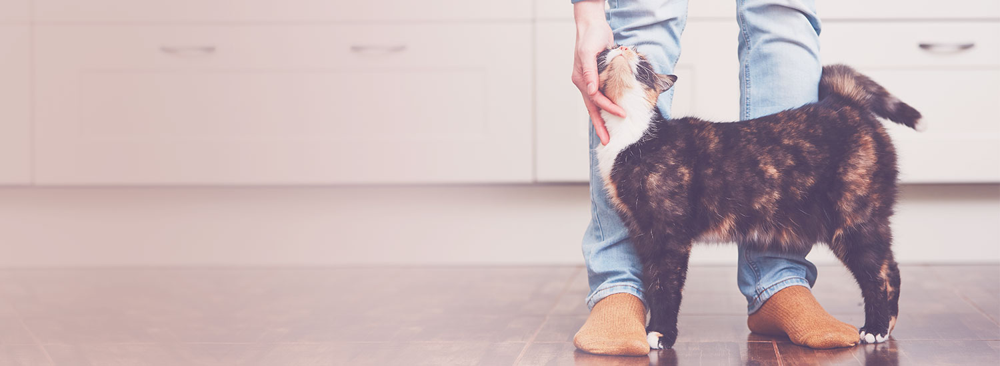

Cats World
Cats Breeds

The following list of cat breeds includes only domestic cat breeds and domestic × wild hybrids.
Read MoreWhat is normal cat behaviour?
The cat has a subtle repertoire of facial expressions, vocal sounds, and tail and body postures that express its emotional state and intentions. These various signals serve to increase, decrease, or maintain social distance. One distinctive social behaviour involves rubbing the side of the head, lips, chin, or tail against the owner and against furniture. These regions of the cat’s body contain scent glands that seem to play a role in establishing a familiar odour in the cat’s environment.
Read MoreWhat should I feed my cat?

Cats should have a diet similar to that of their wild relatives. They are adapted by nature to be flesh eaters, as is shown by their alimentary tract and their dentition. The cat uses its canines to catch and kill prey, the molars to cut it up. Lack of flat-surfaced teeth prevents it from chewing or gnawing. The cat has a short intestine, and its stomach secretes digestive juices that act primarily on meat. Cats, however, like all meat-eating animals, ingest grass and other plants occasionally, and small quantities of vegetables may serve as both a laxative and a hair ball remover.
Read More